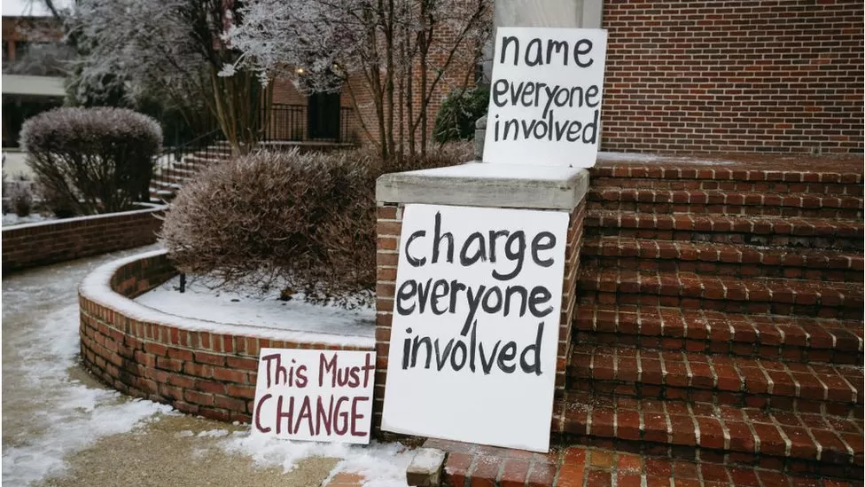

W5: Witnessing
I wanted to introduce you to Allissa Richardson’s book Bearing Witness While Black for a number of reasons.
Because I think it’s one of the most important books on social media to come out in recent years;
Because of its conceptual richness and utility in providing a systematic framework for understanding the role of social media as a platform for witnessing.
As a reminder that social media is not just about marketing and entertainment, but is also a political practice, specifically in this case in relation to the politics of identity.
To provide a framework for thinking about race in relation to social media.
Because it’s extremely relevant to a social justice struggle that’s still going on in the US right now. Two years ago in Denver, there was another incident similar to those described in Alissa Richardson’s book, involving video and social media; ironically, the black 14-year old shot by police has the same name as the author of the book itself: Richardson.
Across the two chapters, various older analytical frameworks for witnessing are referenced, but I think that Richardson makes a compelling case for the historical specificity of Black witnessing in particular (I didn’t assign chapter 2, but that covers the historical part, in terms of the role of early Black newspapers, etc.).
Public Spheres
One of the most important concepts that’s introduced is the notion of the public sphere, and of Black public spheres in particular, I remember reading the special issue of the journal Public Culture, “The Black Public Sphere,” when it came out in 1994.
The concept of the public sphere itself remains very relevant today, particularly in the context of social media, and I was wondering whether you’d come across the concept in any previous classes, as well as what you thought of the concept of counterpublics that Richardson elaborates.
As you’ll have seen if you read it, the first part of chapter 3 focuses primarily on the interviews with participants in Black Lives Matter and other activists. Among these, the work of the data scientist Samuel Sinyangwe is particularly interesting. He is definitely worth following on Twitter, and check out his current project, Police Scorecard.
The White Racial Frame
In terms of concepts, the latter part of the chapter frequently references the concepts of news frames, which are to do with the crucial concept of representation. Both Black Lives Matter and Richardson are engaged in critiquing the existing dominant news frames of legacy media (I love the use of this term legacy media to describe old-school news networks like Fox or CNN! It makes them seem so out of touch with what’s happening on the ground.)
One key theoretical concept that’s mentioned a few times by Richardson is the notion of the white racial frame, a term first elaborated by Joe Feagin in his 2013 book of the same name. Essentially, all of the legacy news frames discussed by Richardson (from Wolf Blitzer on down…) are examples of Feagin’s concept. I’m attaching the Preface and Introduction to Feagin’s book here in case you’re interested in reading them.
How events such as police beatings or shootings of unarmed black citizens is framed, in terms of what kind of story is told about those events and who tells it, is the key political issue in relation to news frames. The question then is, whose frame is the dominant one? What emerges clearly from Richardson’s book is that the Black appropriation of social media platforms such as Twitter has served to challenge and destabilize the historical hegemony of the white racial frame in legacy news media outlets, often exposing their distortions and biases.
In her book Twitter and Tear Gas, the Turkish journalist Zeynep Tufekci has also explored this socially progressive dimension of social media platforms in relation to resistance movements in the Middle Eastern region, particularly the Arab Spring in Egypt and Tunisia in 2011, as well as resistance movements in Turkey. That’s a separate topic though, which we can explore later in the course if people are interested in going further down that road.
Zeynep Tufekci, Twitter and Tear Gas: The Power and Fragility of Networked Protes (New Haven: Yale University Press, 2017).
To finish for this week, here are some additional materials relating to Black witnessing in particular that will be of interest. I highly recommend the video interview with Allissa Richardson below, while the articles about Tyre Nichols earlier this year also raise complex questions about the ethical issues raised by the increasing circulation and visibility of videos on social media platforms, whether by citizen journalists, CCTV footage, or police body cameras. The question about our social/political responsibility to watch these often extremely disturbing videos (from Rodney King to Tyre Nichols) is a key subject of debate right now. As Allissa Richardson puts it in the interview below:
I would like to get to the point where we don’t need the videos to believe black people […] Why are black people asked to produce this footage to kind of pre-litigate the fact that they didn’t deserve their own demise?
Historical witnessing: Travelling While Black (2019) (VR documentary), available from the Meta store.
Tyre Nichols

Sarah Smith, “Anger and hope for change at Tyre Nichols funeral” (BBC News, 2 February 2023).
Shira Ovide, “Do you have a moral duty to watch the police beating of Tyre Nichols?” (Washington Post, 31 January 2023).
David Graeber, “Ferguson and the Criminalization of American Life” (Gawker, 15 March 2015).